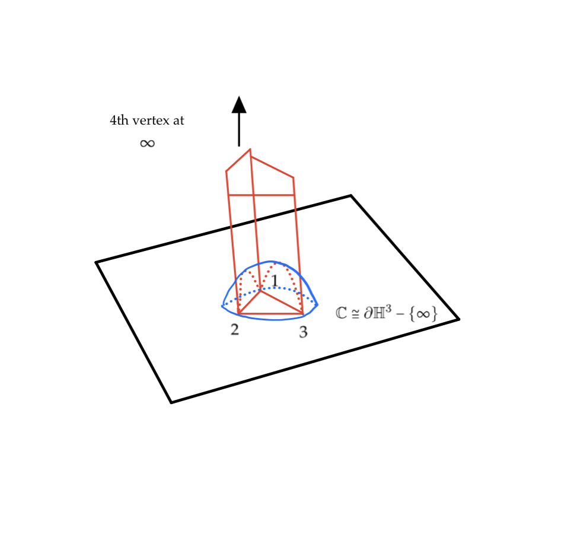
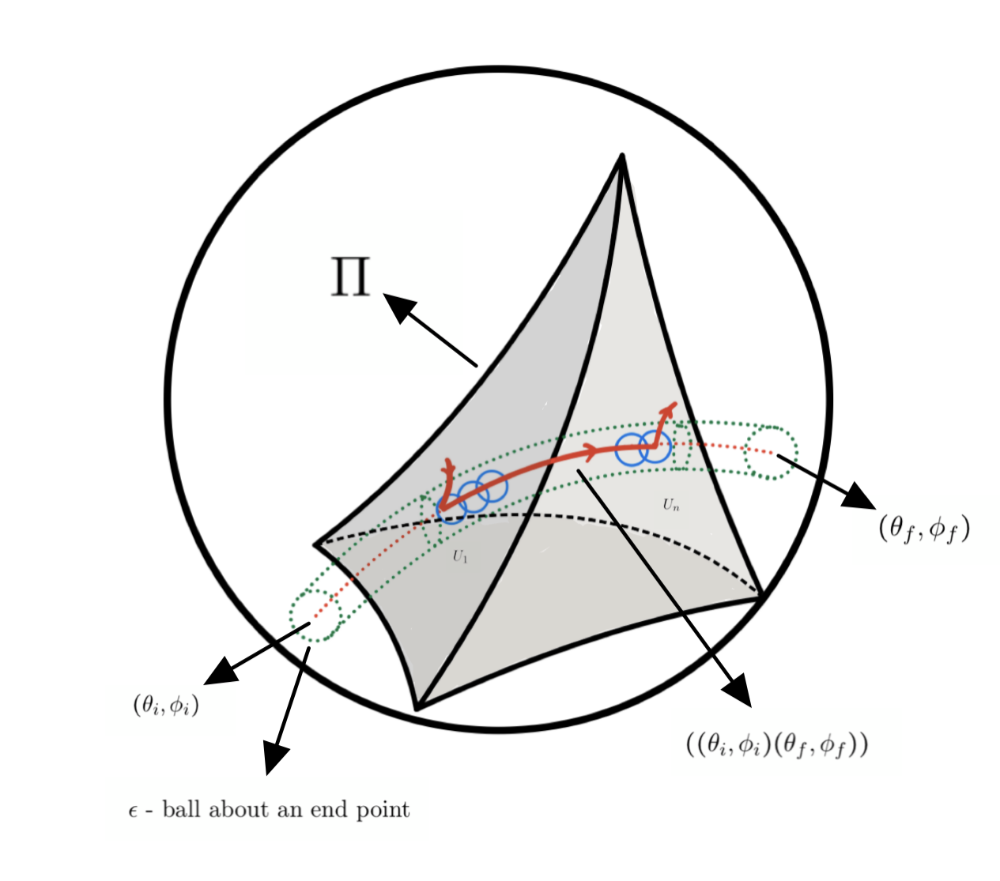
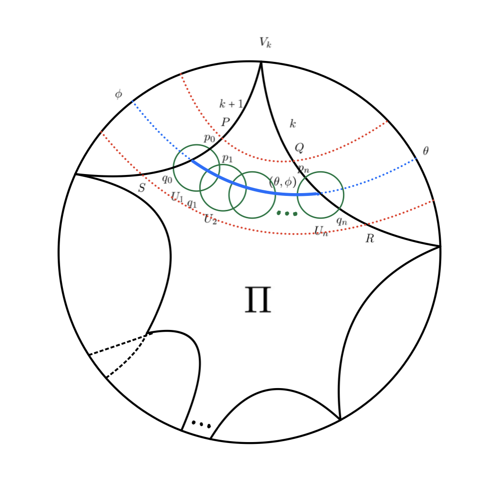
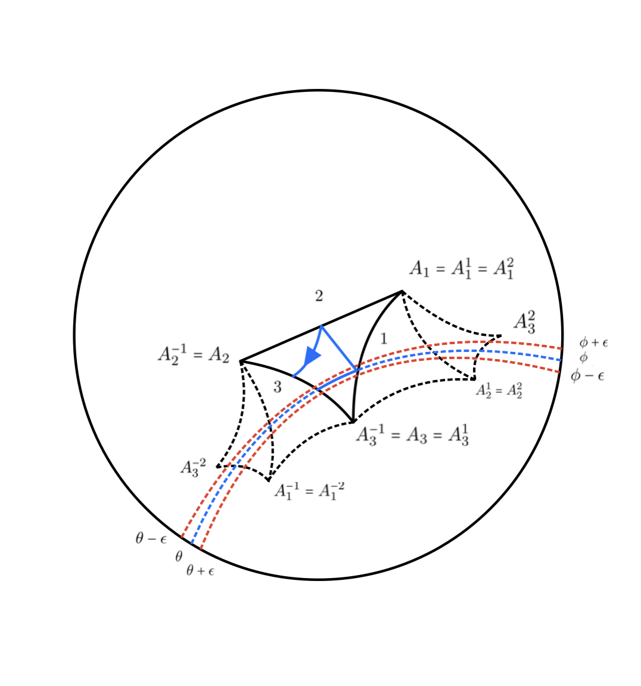
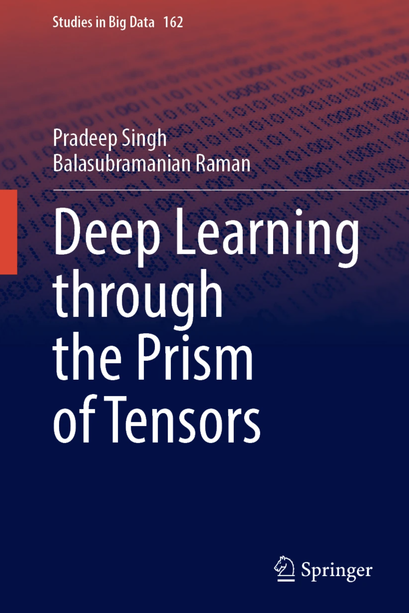

|
|
Turning Time into Shapes: A Point-Cloud Framework with Chaotic Signatures for Time Series
P. Singh and R. Balasubramanian Journal of Forecasting (Wiley), 2025 In Press |
|
|
IsoMapGen: Framework for Early Prediction of Peak Ground Acceleration Using Tripartite Feature Extraction and Gated Attention Model
A. Joshi, P. Singh and R. Balasubramanian Computers and Geosciences (Elsevier), vol. 196, pp. 1-15, 2025 DOI:10.1016/j.cageo.2024.105849 |

|
A Deep Attention Model for Onsite Estimation of Earthquake Epicenter Distance and Magnitude
A. Joshi, P. Singh and R. Balasubramanian IEEE Transactions on Geoscience and Remote Sensing, vol. 62, pp. 1-11, 2024 DOI:10.1109/TGRS.2024.3459425 |
|
|
Towards Engagement Prediction: A Cross-Modality Dual-Pipeline
Approach using Visual and Audio Features
D. Kumar, S. Madan, P. Singh, A. Dhall and R. Balasubramanian ACM MULTIMEDIA 2024, 28 October - 1 November 2024, Melbourne, Australia DOI:10.1145/3664647.3688986 |
 |
All Signals Point to Personality: A Dual-Pipeline LSTM-Attention and Symbolic Dynamics Framework for Predicting Personality Traits from Bio-Electrical Signals
D. Kumar, P. Singh and R. Balasubramanian Biomedical Signal Processing and Control (Elsevier), vol. 96(A), pp. 1-12, 2024 DOI:10.1016/j.bspc.2024.106609 |
 |
Neuro-Emotional Mapping of Human Emotions via EEG Signals
D. Kumar, P. Singh, A. Kumar, S. Ghosh and R. Balasubramanian 18th IEEE International Conference on Automatic Face and Gesture Recognition (FG), 27-31 May 2024, Istanbul, Turkey DOI:10.1109/FG59268.2024.10581941 |
 |
Integrating Physiological Signals with Dynamical
Attention Networks for Personality Trait Analysis
D. Kumar, P. Singh, Richa, K.B. Nampalle and R. Balasubramanian International Joint Conference on Neural Networks (IJCNN 2024), 30 June - 5 July 2024, Yokohama, Japan DOI:10.1109/IJCNN60899.2024.10650662 |
|


|
Coding Of Billiards In Hyperbolic 3-Space
P. Singh Journal of Dynamical and Control Systems (Springer Nature), vol 30(4), pp. 30-47, 2024 DOI:10.1007/s10883-024-09721-0 |
 
|
Bratteli-Vershikizability of Polygonal Billiards on the Hyperbolic Plane
A. Nagar and P. Singh Journal of the Australian Mathematical Society (Cambridge University Press), vol 117.1, pp. 85-104, 2024 DOI:10.1017/S1446788723000174 |
|


|
Finiteness in Polygonal Billiards on Hyperbolic Plane
A. Nagar and P. Singh Topological Methods in Nonlinear Analysis (Juliusz Schauder Center for Nonlinear Studies), vol 58(2), pp. 481–520, 2021 DOI:10.12775/TMNA.2021.003 |
|
 |
Deep Learning Through the Prism of Tensors
P. Singh and R. Balasubramanian Springer Nature Singapore, 2024, ISBN: 978-981-97-8018-1 |
|
|
The Geometry of Intelligence: Foundations of Transformer Networks in Deep Learning
P. Singh and R. Balasubramanian Springer Nature Singapore, 2025, ISBN: 978-981-96-4705-7 |
|
|
Artificial Intelligence and Machine Learning
P. Singh, T. K. Gandhi and R. Balasubramanian McGraw Hill India, 2025, In Press |
 |
Bits and Bots
P. Singh Kindle Publishing, 2023, ISBN: 979-886-81-3470-8 |
 
|
Geometric Deep Learning
Grids, Groups, Graphs, Geodesics, and Gauges Towards Geometric Deep Learning Brief Introduction to GDL |